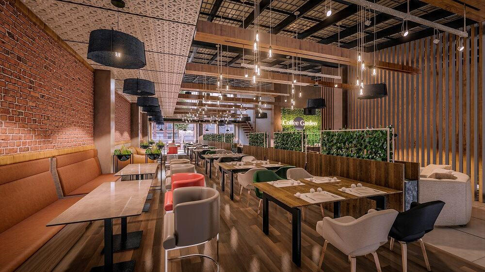

Kafe tarixi
"Sulola kafe"si 1990-yilda ochdil. Kafemiz samaradorligini va taomlarimizning sifatini oshirish uchun har kuni ishchi bilan boshqariladi. Kafemizga 20 dan oshiq ishchi ishlaydi va kundalik o'rtacha 100 dan ko'p mijoz tashrif buyuradi. Kafemiz sifatli mahsulotlar bilan ta'minlanadi va oshpazlarimiz o'nlab turli taomlar tayyorlashlar bilan mashg'ul.
Maqsad
"Sulola kafe"ning asosiy maqsadi eng sifatli va lazzatli taomlarni taklif qilish, va foydalanuvchilarga yaxshi xizmat ko'rsatishdir. Buning uchun biz tun-u kun bor kuchimiz bilan harakat qilyabmiz
Aloqa
Biz bilan bog'lanish uchun, bizning aloqa ma'lumotlarimiz:
- Telefon: +99890 123 45 67
- E-mail: info@sulolacafe.uz
- Manzil: 123 ko'cha, Toshkent, Uzbekistan